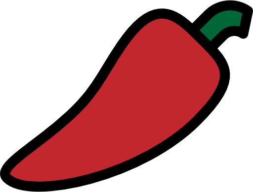

| ➤ NIGIRI 2pz polpettine di riso sushi ricoperte con fette di pesce | Prezzo Asporto |
|---|---|
| -Sake (salmone) | €3.00 |
| -Maguro (tonno) | €3.50 |
| -Suzuki (branzino) | €3.00 |
| -Ebi (gambero)* | €3.00 |
| -Tako (polpo, alga Nori)* | €3.00 |
| -Avocado (avocado, alga Nori) | €2.50 |
| -Surimi (granchio, alga Nori)* | €2.50 |
| ➤ HOSOMAKI 8pz piccoli roll con alga Nori all’esterno | |
|---|---|
| -Sake (salmone) | €4.00 |
| -Maguro (tonno) | €4.50 |
| -Suzuki (branzino) | €4.00 |
| -Ebi (gambero)* | €4.00 |
| -Avocado | €3.50 |
| -Surimi (granchio)* | €3.50 |
| -Cetriolo | €3.50 |
| -Philadelphia | €4.00 |
| -Hosofritto philadelphia (salmone cotto; philadelphia, salsa teriyaki) | €4.50 |
| ➤ TEMAKI 1pz arrotolato a forma di cono, da mangiare con le mani | |
|---|---|
| -Sake (salmone, avocado) | €3.00 |
| -Sake spicy (salmone, avocado, salsa piccante)  | €3.00 |
| -Maguro (tonno , avocado) | €3.50 |
| -Maguro spicy (tonno, avocado, salsa piccante) | €3.50 |
| -California (surimi, cetriolo, maionese)* | €3.00 |
| -Ebitem (gamberi in tempura, avocado, maionese, salsa teriyaki)* | €3.50 |
| -Yasai (avocado, cetriolo, insalata, maionese) | €3.00 |
| ➤ FUTOMAKI 10pz roll con molti ingredienti all'interno, ogni pezzo è molto grande e sottile | |
|---|---|
| -Futo california (surimi, cetriolo, avocado, maionese)* | €9.00 |
| -Futofritto (salmone, avocado, philadelphia; salsa teriyaki, scaglie di tempura) | €9.50 |
| ➤ ONIGIRI 1pz polpetta di riso ripiena | |
|---|---|
| -Sake (salmone, philadelphia) | €3.50 |
| -Yasai (avocado, cetriolo) | €3.00 |
| ➤ SASHIMI 4pz fette di pesce crudo | |
|---|---|
| -Sake (salmone; 1 porzione a testa) | €4.00 |
| ➤ CARPACCIO 5pz fette di pesce crudo in salsa ponzu (salsa di soia aromatizzata agli agrumi) | |
|---|---|
| -Sake (salmone, salsa ponzu; 1 porzione a testa) | €4.50 |
| ➤ TARTARE cubetti pesce crudo in salsa yuzu (salsa di soia aromatizzata con succo di yuzu) | |
|---|---|
| -Sake (salmone, salsa yuzu; 1 porzione a testa) | €5.00 |
| ➤ GUNKAN 2pz pallottola di riso avvolto e ricoperto di ingredienti morbidi, da mangiare in un boccone | |
|---|---|
| -Sake (salmone, avvolto con alga Nori) | €3.00 |
| -Maguro (tonno, avvolto con alga Nori) | €4.00 |
| -Sake spicy (salmone, salsa piccante, avvolto con alga Nori) | €3.00 |
| -Maguro spicy (tonno, salsa piccante, avvolto con alga Nori) | €4.00 |
| ➤ URAMAKI CLASSICI 8pz roll con alga Nori all'interno | |
|---|---|
| -Sake (salmone, avocado; sesamo) | €7.00 |
| -Maguro (tonno, avocado; sesamo) | €8.00 |
| -Sake spicy (salmone, avocado, maionese piccante; cipolla croccante,sesamo) | €7.00 |
| -Maguro spicy (tonno, avocado, maionese piccante; cipolla croccante, sesamo) | €8.00 |
| -Philadelphia (salmone, avocado, philadelphia; sesamo) | €7.50 |
| -Ebitem (gamberi in tempura, maionese; kataifi, salsa teriyaki, sesamo)* | €7.50 |
| -Yasai (avocado, cetriolo, insalata; sesamo) | €6.50 |
| -Miura (salmone cotto, philadelphia; salsa teriyaki, sesamo) | €7.00 |
| -California (surimi, avocado, cetriolo, maionese; sesamo) | €8.00 |
| -Urafritto (salmone cotto, philadelphia; salsa teriyaki, sesamo) | €8.50 |
| ➤ URAMAKI SPECIAL 8pz | |
|---|---|
| -Mango roll (salmone, mango; philadelphia, salsa mango) | €9.00 |
| -Rainbow (surimi, avocado, cetriolo, maionese; pesce misto)* | €8.50 |
| -Tiger roll (gamberi in tempura, avocado; salmone, salsa teriyaki)* | €9.00 |
| -Sake tartufo (salmone cotto; fette di salmone scottato, salsa tartufo) | €10.00 |
| -Crispy sake (salmone fritto, maionese; scaglie di tempura, salsa teriyaki) | €9.00 |
| -Kani roll (surimi in tempura, philadelphia; fette di salmone scottato, salsa teriyaki)* | €8.50 |
| ➤ CHIRASHI vari tipi di pesce serviti in una ciotola di riso | |
|---|---|
| -Sake (riso sushi, salmone; sesamo, salsa teriyaki) | €7.00 |